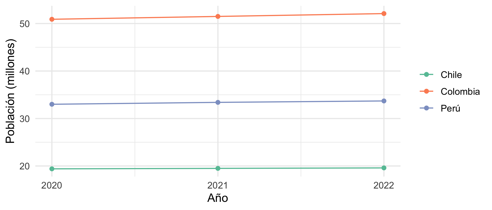
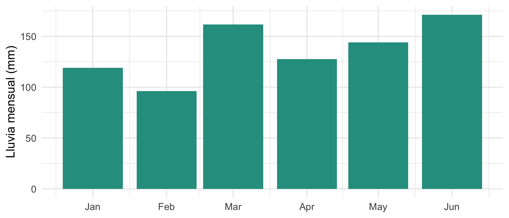
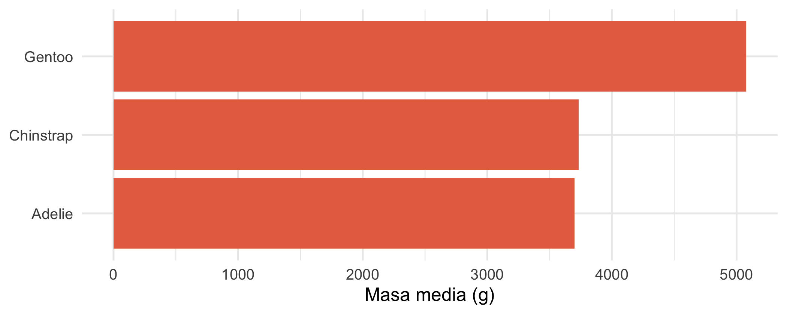

library(tidyverse) # dplyr, tidyr, readr, stringr, forcats, ggplot2...
library(lubridate) # fechas
library(palmerpenguins)
set.seed(2026)Manejo de datos con tidyverse
Minicurso de R · Módulo 2
R
datos
tidyverse
dplyr
tidyr
Importar, limpiar, transformar, unir y reestructurar tablas de datos; fechas, factores y datos faltantes con dplyr, tidyr, lubridate y forcats.
Objetivos de aprendizaje
Al terminar este cuaderno podrás:
- Importar y exportar datos en CSV y otros formatos, sin depender de rutas absolutas.
- Explicar qué es un conjunto de datos ordenado (tidy) y reestructurar tablas entre formato ancho y largo.
- Seleccionar, filtrar, crear variables y resumir por grupos con
dplyr. - Unir tablas y combinar varios archivos en uno solo.
- Manejar fechas, texto y factores.
- Diagnosticar y tratar datos faltantes.
1. Importar y exportar
Los datos vienen casi siempre en archivos de texto separados por comas (CSV). readr::read_csv() es rápido, adivina el tipo de cada columna y devuelve un tibble (un data.frame con mejor impresión).
Como aquí no tenemos un archivo, primero escribimos uno temporal y luego lo leemos. Es el mismo procedimiento que con tus propios archivos:
ruta <- tempfile(fileext = ".csv")
muestras <- tibble(
estacion = c("E01", "E02", "E03", "E04"),
fecha = as.Date(c("2025-03-01", "2025-03-01", "2025-03-02", "2025-03-02")),
temp_c = c(26.4, 27.1, NA, 25.8),
salinidad = c(34.9, 35.2, 35.0, 34.7)
)
write_csv(muestras, ruta) # exportar
leidos <- read_csv(ruta) # importar
leidos# A tibble: 4 × 4
estacion fecha temp_c salinidad
<chr> <date> <dbl> <dbl>
1 E01 2025-03-01 26.4 34.9
2 E02 2025-03-01 27.1 35.2
3 E03 2025-03-02 NA 35
4 E04 2025-03-02 25.8 34.7Observa que read_csv() reconoció fecha como fecha (<date>) y temp_c como número. Si necesitas controlar los tipos usa col_types:
read_csv(ruta, col_types = cols(estacion = col_character(),
fecha = col_date("%Y-%m-%d"),
.default = col_double()))# A tibble: 4 × 4
estacion fecha temp_c salinidad
<chr> <date> <dbl> <dbl>
1 E01 2025-03-01 26.4 34.9
2 E02 2025-03-01 27.1 35.2
3 E03 2025-03-02 NA 35
4 E04 2025-03-02 25.8 34.7
TipConsejos para archivos reales
- Guarda los datos en una carpeta
datos/dentro del proyecto y léelos con rutas relativas (read_csv("datos/muestras.csv")), nunca con rutas absolutas como~/Google Drive/.... - En archivos con coma decimal y punto y coma como separador usa
read_csv2(). Si hay tildes mal leídas, indicalocale = locale(encoding = "latin1"). - Para Excel usa
readxl::read_excel(), para SPSS/Statahaven::read_sav()y para archivos enormesdata.table::fread()oarrow. - Para guardar un objeto de R tal cual, usa
saveRDS()/readRDS().
2. Teoría: datos ordenados (tidy)
Un conjunto de datos es ordenado cuando cumple tres reglas (Wickham, 2014):
- Cada variable es una columna.
- Cada observación es una fila.
- Cada valor ocupa una celda.
Muchas tablas hechas para leer (con años en columnas, por ejemplo) violan la regla 1. Se llaman de formato ancho. Para analizar y graficar con R conviene el formato largo.
ancho <- tibble(
pais = c("Colombia", "Perú", "Chile"),
`2020` = c(50.9, 33.0, 19.4),
`2021` = c(51.5, 33.4, 19.5),
`2022` = c(52.1, 33.7, 19.6)
)
ancho# A tibble: 3 × 4
pais `2020` `2021` `2022`
<chr> <dbl> <dbl> <dbl>
1 Colombia 50.9 51.5 52.1
2 Perú 33 33.4 33.7
3 Chile 19.4 19.5 19.6pivot_longer() convierte columnas en filas y pivot_wider() hace lo contrario:
largo <- ancho |>
pivot_longer(cols = -pais, names_to = "anio", values_to = "poblacion_millones") |>
mutate(anio = as.integer(anio))
largo# A tibble: 9 × 3
pais anio poblacion_millones
<chr> <int> <dbl>
1 Colombia 2020 50.9
2 Colombia 2021 51.5
3 Colombia 2022 52.1
4 Perú 2020 33
5 Perú 2021 33.4
6 Perú 2022 33.7
7 Chile 2020 19.4
8 Chile 2021 19.5
9 Chile 2022 19.6largo |>
pivot_wider(names_from = pais, values_from = poblacion_millones)# A tibble: 3 × 4
anio Colombia Perú Chile
<int> <dbl> <dbl> <dbl>
1 2020 50.9 33 19.4
2 2021 51.5 33.4 19.5
3 2022 52.1 33.7 19.6ggplot(largo, aes(anio, poblacion_millones, colour = pais)) +
geom_line() + geom_point() +
scale_x_continuous(breaks = 2020:2022) +
scale_colour_brewer(palette = "Set2", name = NULL) +
labs(x = "Año", y = "Población (millones)") +
theme_minimal(base_size = 12)
3. Los verbos de dplyr
dplyr resuelve la mayoría de las transformaciones con cinco verbos, que se encadenan con la tubería |> (“y luego”):
| Verbo | Qué hace |
|---|---|
select() |
elige columnas |
filter() |
elige filas según una condición |
mutate() |
crea o modifica columnas |
arrange() |
ordena filas |
summarise() con group_by() |
resume por grupos |
Usamos la tabla de pingüinos de Palmer (344 pingüinos de tres especies en la Antártida):
glimpse(penguins)Rows: 344
Columns: 8
$ species <fct> Adelie, Adelie, Adelie, Adelie, Adelie, Adelie, Adel…
$ island <fct> Torgersen, Torgersen, Torgersen, Torgersen, Torgerse…
$ bill_length_mm <dbl> 39.1, 39.5, 40.3, NA, 36.7, 39.3, 38.9, 39.2, 34.1, …
$ bill_depth_mm <dbl> 18.7, 17.4, 18.0, NA, 19.3, 20.6, 17.8, 19.6, 18.1, …
$ flipper_length_mm <int> 181, 186, 195, NA, 193, 190, 181, 195, 193, 190, 186…
$ body_mass_g <int> 3750, 3800, 3250, NA, 3450, 3650, 3625, 4675, 3475, …
$ sex <fct> male, female, female, NA, female, male, female, male…
$ year <int> 2007, 2007, 2007, 2007, 2007, 2007, 2007, 2007, 2007…penguins |>
select(especie = species, isla = island, masa_g = body_mass_g, sexo = sex) |>
filter(!is.na(masa_g), sexo == "female") |>
mutate(masa_kg = masa_g / 1000) |>
arrange(desc(masa_kg)) |>
head(5)# A tibble: 5 × 5
especie isla masa_g sexo masa_kg
<fct> <fct> <int> <fct> <dbl>
1 Gentoo Biscoe 5200 female 5.2
2 Gentoo Biscoe 5200 female 5.2
3 Gentoo Biscoe 5150 female 5.15
4 Gentoo Biscoe 5100 female 5.1
5 Gentoo Biscoe 5050 female 5.05Resumir por grupos:
penguins |>
filter(!is.na(body_mass_g)) |>
group_by(species, island) |>
summarise(n = n(),
masa_media = mean(body_mass_g),
masa_sd = sd(body_mass_g),
.groups = "drop")# A tibble: 5 × 5
species island n masa_media masa_sd
<fct> <fct> <int> <dbl> <dbl>
1 Adelie Biscoe 44 3710. 488.
2 Adelie Dream 56 3688. 455.
3 Adelie Torgersen 51 3706. 445.
4 Chinstrap Dream 68 3733. 384.
5 Gentoo Biscoe 123 5076. 504.Seleccionar el máximo de cada grupo
Un problema frecuente es quedarse con la fila de mayor valor de cada grupo. slice_max() lo resuelve sin código complicado:
penguins |>
filter(!is.na(body_mass_g)) |>
group_by(species) |>
slice_max(body_mass_g, n = 1, with_ties = FALSE) |>
select(species, island, sex, body_mass_g)# A tibble: 3 × 4
# Groups: species [3]
species island sex body_mass_g
<fct> <fct> <fct> <int>
1 Adelie Biscoe male 4775
2 Chinstrap Dream male 4800
3 Gentoo Biscoe male 6300Varias columnas a la vez con across()
penguins |>
group_by(species) |>
summarise(across(where(is.numeric), \(x) mean(x, na.rm = TRUE)))# A tibble: 3 × 6
species bill_length_mm bill_depth_mm flipper_length_mm body_mass_g year
<fct> <dbl> <dbl> <dbl> <dbl> <dbl>
1 Adelie 38.8 18.3 190. 3701. 2008.
2 Chinstrap 48.8 18.4 196. 3733. 2008.
3 Gentoo 47.5 15.0 217. 5076. 2008.4. Unir tablas
Cuando la información está repartida en varias tablas se unen por una llave (columna en común). Los tipos de unión más usados son:
| Función | Conserva |
|---|---|
left_join(x, y) |
todas las filas de x |
inner_join(x, y) |
solo las filas con pareja en ambas |
full_join(x, y) |
todas las filas de ambas |
anti_join(x, y) |
filas de x sin pareja en y |
estaciones <- tibble(estacion = c("E01", "E02", "E03", "E05"),
municipio = c("Tumaco", "Buenaventura", "Bahía Solano", "Nuquí"))
leidos |> left_join(estaciones, by = "estacion") # conserva las 4 muestras# A tibble: 4 × 5
estacion fecha temp_c salinidad municipio
<chr> <date> <dbl> <dbl> <chr>
1 E01 2025-03-01 26.4 34.9 Tumaco
2 E02 2025-03-01 27.1 35.2 Buenaventura
3 E03 2025-03-02 NA 35 Bahía Solano
4 E04 2025-03-02 25.8 34.7 <NA> leidos |> inner_join(estaciones, by = "estacion") # solo las que tienen municipio# A tibble: 3 × 5
estacion fecha temp_c salinidad municipio
<chr> <date> <dbl> <dbl> <chr>
1 E01 2025-03-01 26.4 34.9 Tumaco
2 E02 2025-03-01 27.1 35.2 Buenaventura
3 E03 2025-03-02 NA 35 Bahía Solanoleidos |> anti_join(estaciones, by = "estacion") # muestras sin municipio# A tibble: 1 × 4
estacion fecha temp_c salinidad
<chr> <date> <dbl> <dbl>
1 E04 2025-03-02 25.8 34.7Combinar varios archivos en uno
Si tienes un archivo por mes (o por estación) con las mismas columnas, léelos todos y apílalos:
carpeta <- file.path(tempdir(), "mensual")
dir.create(carpeta, showWarnings = FALSE)
for (mes in c("2025-01", "2025-02", "2025-03")) {
tibble(mes = mes, estacion = c("E01", "E02"), lluvia_mm = round(runif(2, 0, 200))) |>
write_csv(file.path(carpeta, paste0("lluvia_", mes, ".csv")))
}
archivos <- list.files(carpeta, pattern = "\\.csv$", full.names = TRUE)
todos <- map_dfr(archivos, read_csv, show_col_types = FALSE)
todos# A tibble: 6 × 3
mes estacion lluvia_mm
<chr> <chr> <dbl>
1 2025-01 E01 140
2 2025-01 E02 111
3 2025-02 E01 28
4 2025-02 E02 57
5 2025-03 E01 111
6 2025-03 E02 55. Texto, fechas y factores
Texto con stringr
Un problema típico es que los códigos pierden los ceros a la izquierda al importarlos ("007" se vuelve 7). str_pad() los recupera:
codigos <- c(7, 42, 105)
str_pad(codigos, width = 4, side = "left", pad = "0")[1] "0007" "0042" "0105"nombres <- c(" Bogotá D.C. ", "MEDELLÍN", "cali")
nombres |> str_trim() |> str_to_title()[1] "Bogotá D.c." "Medellín" "Cali" str_detect(nombres, regex("cali", ignore_case = TRUE))[1] FALSE FALSE TRUEFechas con lubridate
Las fechas se guardan como números (días desde 1970-01-01), lo que permite restarlas y extraer componentes. Las funciones ymd(), dmy(), mdy() interpretan el orden que tenga el texto:
f <- dmy(c("15/03/2025", "01/07/2025", "31/12/2025"))
f[1] "2025-03-15" "2025-07-01" "2025-12-31"year(f); month(f, label = TRUE); wday(f, label = TRUE)[1] 2025 2025 2025[1] Mar Jul Dec
12 Levels: Jan < Feb < Mar < Apr < May < Jun < Jul < Aug < Sep < ... < Dec[1] Sat Tue Wed
Levels: Sun < Mon < Tue < Wed < Thu < Fri < Satf[2] - f[1] # diferencia en díasTime difference of 108 daysinterval(f[1], f[3]) / months(1) # diferencia en meses[1] 9.516129seq(f[1], by = "month", length.out = 4)[1] "2025-03-15" "2025-04-15" "2025-05-15" "2025-06-15"diario <- tibble(fecha = seq(ymd("2025-01-01"), ymd("2025-06-30"), by = "day"),
lluvia = rgamma(181, shape = 0.6, scale = 8))
diario |>
mutate(mes = floor_date(fecha, "month")) |>
group_by(mes) |>
summarise(total_mm = sum(lluvia)) |>
ggplot(aes(mes, total_mm)) +
geom_col(fill = "#2a9d8f") +
scale_x_date(date_labels = "%b") +
labs(x = NULL, y = "Lluvia mensual (mm)") +
theme_minimal(base_size = 12)
Factores con forcats
Un factor es una variable categórica con un conjunto fijo de niveles, y su orden define cómo se ordenan tablas y gráficos.
penguins |>
filter(!is.na(body_mass_g)) |>
group_by(species) |>
summarise(masa = mean(body_mass_g)) |>
mutate(species = fct_reorder(species, masa)) |>
ggplot(aes(masa, species)) +
geom_col(fill = "#e76f51") +
labs(x = "Masa media (g)", y = NULL) +
theme_minimal(base_size = 12)
Otras funciones útiles: fct_relevel() (cambiar el orden a mano), fct_recode() (renombrar niveles), fct_lump_n() (agrupar niveles raros en “Otros”) y droplevels() (descartar niveles sin datos).
6. Datos faltantes
Antes de decidir qué hacer con los NA hay que preguntarse por qué faltan (Rubin, 1976):
- MCAR (missing completely at random): la probabilidad de faltar no depende de nada. Eliminar los casos incompletos no sesga, solo pierde información.
- MAR (missing at random): depende de otras variables observadas (por ejemplo, los hombres responden menos una pregunta). Se puede corregir usando esas variables.
- MNAR (missing not at random): depende del propio valor faltante (quien tiene ingresos altos no los declara). Es el caso más difícil y no se corrige con métodos automáticos.
Primero, contar dónde faltan los datos:
penguins |>
summarise(across(everything(), \(x) sum(is.na(x)))) |>
pivot_longer(everything(), names_to = "variable", values_to = "faltantes") |>
filter(faltantes > 0)# A tibble: 5 × 2
variable faltantes
<chr> <int>
1 bill_length_mm 2
2 bill_depth_mm 2
3 flipper_length_mm 2
4 body_mass_g 2
5 sex 11Luego, explorar si faltan de forma aleatoria: ¿hay más NA en el sexo según la especie o la isla?
penguins |>
group_by(species, island) |>
summarise(prop_sexo_faltante = mean(is.na(sex)), n = n(), .groups = "drop")# A tibble: 5 × 4
species island prop_sexo_faltante n
<fct> <fct> <dbl> <int>
1 Adelie Biscoe 0 44
2 Adelie Dream 0.0179 56
3 Adelie Torgersen 0.0962 52
4 Chinstrap Dream 0 68
5 Gentoo Biscoe 0.0403 124Las opciones más simples para tratarlos son: eliminar (drop_na()), que es razonable si es MCAR y son pocos casos, o imputar (reemplazar por un valor razonable), por ejemplo con la mediana del grupo:
completos <- penguins |> drop_na(body_mass_g, sex)
nrow(penguins); nrow(completos)[1] 344[1] 333imputado <- penguins |>
group_by(species) |>
mutate(masa_imputada = coalesce(body_mass_g, median(body_mass_g, na.rm = TRUE))) |>
ungroup()
imputado |> filter(is.na(body_mass_g)) |> select(species, body_mass_g, masa_imputada)# A tibble: 2 × 3
species body_mass_g masa_imputada
<fct> <int> <dbl>
1 Adelie NA 3700
2 Gentoo NA 5000
WarningCuidado con la imputación simple
Reemplazar por la media o la mediana reduce artificialmente la variabilidad y puede sesgar relaciones entre variables. Para análisis formales usa imputación múltiple (paquete mice) e incluye el mecanismo supuesto en la discusión de resultados.
Ejercicios
- Importar. Escribe el tibble
muestrasa un CSV conwrite_csv(), léelo de nuevo y comprueba conall.equal()que es idéntico al original. - Ordenar. La tabla
anchotiene un país por fila y un año por columna. Conviértela a formato largo y calcula el crecimiento porcentual entre 2020 y 2022 de cada país. - Resumir. Con
penguins, calcula la media del largo del pico (bill_length_mm) por especie y sexo, ignorando faltantes. ¿Qué grupo tiene el pico más largo? - Unir. Crea una tabla con la altitud de cada una de las estaciones E01–E04 y únela a
leidos. - Fechas. ¿Cuántos días hay entre
2025-03-15y el 1 de enero de 2026? ¿Qué día de la semana cae?
NoteSoluciones sugeridas
# 1
tmp <- tempfile(fileext = ".csv"); write_csv(muestras, tmp)
all.equal(muestras, read_csv(tmp, show_col_types = FALSE), check.attributes = FALSE)[1] TRUE# 2
ancho |>
pivot_longer(-pais, names_to = "anio", values_to = "pob") |>
group_by(pais) |>
summarise(crecimiento_pct = (pob[anio == "2022"] / pob[anio == "2020"] - 1) * 100)# A tibble: 3 × 2
pais crecimiento_pct
<chr> <dbl>
1 Chile 1.03
2 Colombia 2.36
3 Perú 2.12# 3
penguins |>
filter(!is.na(sex)) |>
group_by(species, sex) |>
summarise(pico_medio = mean(bill_length_mm, na.rm = TRUE), .groups = "drop") |>
arrange(desc(pico_medio))# A tibble: 6 × 3
species sex pico_medio
<fct> <fct> <dbl>
1 Chinstrap male 51.1
2 Gentoo male 49.5
3 Chinstrap female 46.6
4 Gentoo female 45.6
5 Adelie male 40.4
6 Adelie female 37.3# 5
d <- ymd("2026-01-01") - ymd("2025-03-15")
dTime difference of 292 dayswday(ymd("2025-03-15"), label = TRUE, abbr = FALSE)[1] Saturday
7 Levels: Sunday < Monday < Tuesday < Wednesday < Thursday < ... < SaturdayPara profundizar
- Wickham, H. (2014). Tidy data. Journal of Statistical Software, 59(10). https://doi.org/10.18637/jss.v059.i10
- Wickham, H., Çetinkaya-Rundel, M. y Grolemund, G. (2023). R for Data Science (2.ª ed.). r4ds.hadley.nz.
- Rubin, D. B. (1976). Inference and missing data. Biometrika, 63(3), 581–592.
- van Buuren, S. (2018). Flexible Imputation of Missing Data (2.ª ed.). stefvanbuuren.name/fimd.
- Hojas de referencia de Posit: posit.co/resources/cheatsheets.